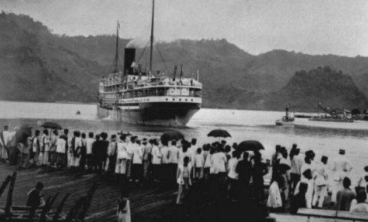
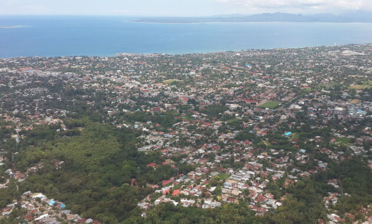
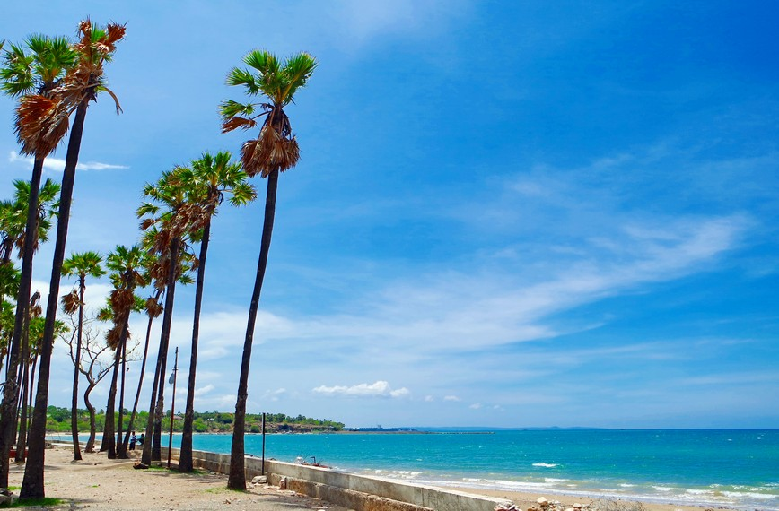
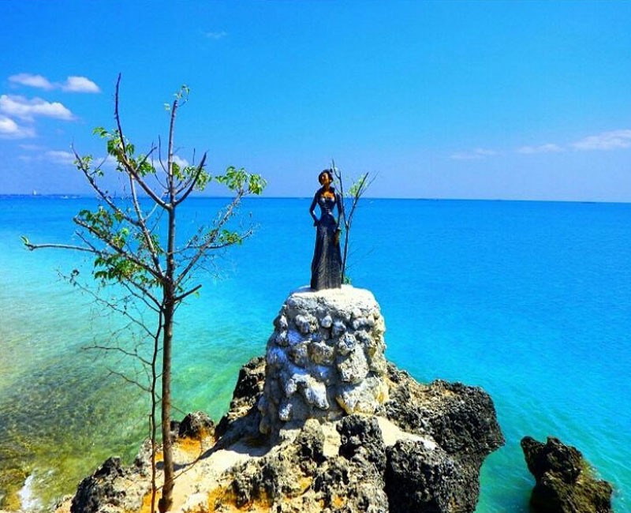

Sejarah

Nama Kupang sebenarnya berasal dari nama seorang raja,
yaitu Nai Kopan atau Lai Kopan, yang memerintah Kota Kupang sebelum bangsa Portugis datang ke Nusa Tenggara Timur.
Pada tahun 1436, pulau Timor mempunyai 12 kota bandar namun tidak disebutkan namanya.
Dugaan ini berdasarkan bahwa kota bandar tersebut terletak di pesisir pantai, dan salah satunya yang strategis menghadap ke Teluk Kupang. Daerah ini merupakan wilayah kekuasaan Raja Helong dan yang menjadi raja pada saat itu adalah Raja Koen Lai Bissi.
Pada tahun 1613, VOC yang berkedudukan di Batavia (Jakarta), mulai melakukan kegiatan perdagangannya di Nusa Tenggara Timur dengan mengirim 3 kapal yang dipimpin oleh Apolonius Scotte,
menuju pulau Timor dan berlabuh di Teluk Kupang. Kedatangan rombongan VOC ini diterima oleh Raja Helong, yang sekaligus menawarkan sebidang tanah untuk keperluan markas VOC.
Pada saat itu VOC belum memiliki kekuatan yang tetap di tanah Timor.
Pada tanggal 29 Desember 1645, seorang padri Portugis yang bernama Antonio de Sao Jacinto tiba di Kupang.
Dia mendapat tawaran yang sama dengan yang diterima VOC dari Raja Helong.
Tawaran tersebut disambut baik oleh Antonio de Sao Jacinto dengan mendirikan sebuah benteng, namun kemudian benteng tersebut ditinggalkan karena terjadi perselisihan di antara mereka.
VOC semakin menyadari pentingnya Nusa Tenggara Timur sebagai salah satu kepentingan perdagangannya, sehingga pada tahun 1625 sampai dengan 1663, VOC melakukan perlawanan ke daerah kedudukan Portugis di pulau Solor dan dengan bantuan orang-orang Islam di Solor, Benteng Fort Henricus berhasil direbut oleh VOC.
Pada tahun 1653, VOC mendarat di Kupang dan berhasil merebut bekas benteng Portugis Fort Concordia, yang terletak di muara sungai Teluk Kupang di bawah pimpinan Kapten Johan Burger. Kedudukan VOC di Kupang langsung dipimpin oleh Openhofd J. van Der Heiden.
Selama menguasai Kupang sejak tahun 1653 sampai dengan tahun 1810, VOC telah menempatkan sebanyak 38 Openhofd dan yang terakhir adalah Stoopkert, yang berkuasa sejak tahun 1808 sampai dengan tahun 1810.
Nama Lai Kopan kemudian disebut oleh Belanda sebagai Koepan dan dalam bahasa sehari-hari menjadi Kupang.
Untuk pengamanan Kota Kupang, Belanda membentuk daerah penyangga di daerah sekitar Teluk Kupang dengan mendatangkan penduduk dari pulau Rote, Sabu dan Solor.
Untuk meningkatkan pengamanan kota, maka pada tahun 23 April 1886, Residen Creeve menetapkan batas-batas kota yang diterbitkan pada Staatblad Nomor 171 tahun 1886.
Oleh karena itu, tanggal 23 April 1886 ditetapkan sebagai tanggal lahir Kota Kupang.
Geografis

Kota Kupang terletak di bagian barat daya Pulau Timor, yang merupakan bagian dari kepulauan Indonesia di wilayah Nusa Tenggara Timur (NTT).
Secara geografis, Kupang berada di pantai timur Teluk Kupang, dengan garis pantai yang membentang sepanjang kota. Wilayah ini memiliki koordinat lintang 10° 10' 00" LS dan bujur 123° 35' 00" BT.
Kota Kupang berbatasan langsung dengan Laut Sawu di sebelah selatan, dengan pegunungan yang membatasi wilayah tersebut ke arah utara. Iklim Kupang cenderung tropis dengan musim kemarau yang panjang dan musim hujan yang terjadi antara bulan November hingga Maret.
Keberadaan Kupang di bagian barat daya Pulau Timor menjadikannya sebagai gerbang penting bagi perdagangan dan interaksi budaya antara wilayah Indonesia dan Timor Leste. Letak geografisnya yang strategis membuatnya menjadi pusat perdagangan, transportasi, dan pemerintahan di Nusa Tenggara Timur.
Wisata
Kota Kupang, dengan pesonanya yang unik dan keindahan alam yang memikat, merupakan destinasi yang menawarkan pengalaman wisata yang tak terlupakan di Nusa Tenggara Timur.
Dengan pantai-pantai yang memikat, hamparan laut yang biru, dan kekayaan budaya yang kaya, Kupang menjadi magnet bagi para pelancong yang mencari petualangan dan keindahan alam yang autentik.
Dari pesisir yang menakjubkan hingga situs-situs sejarah yang memikat, setiap sudut Kota Kupang menjanjikan keajaiban yang tak terlupakan bagi para pengunjungnya.
Mari kita telusuri bersama keindahan dan keunikan tempat wisata yang menawan hati di Kota Kupang.
Pantai Lasiana

Pantai Lasiana yang berlokasi di Kelurahan Lasiana, Kecamatan Kupang Tengah, Kupang, NTT ini berjarak sekitar 12 km ke arah timur dari pusat Kota Kupang.
Di pantai yang menjadi alternatif wisata andalan masyarakat Kupang ini, pengunjung dapat melakukan beragam aktivitas, seperti berenang, memancing, bermain sepak bola, karaoke atau sekedar bermain air di pantainya.
Makin ke sini, semakin banyak wisatawan baik dari dalam maupun luar kota Kupang yang mengunjungi pantai ini.
Pantai Batu Nona

Pantai ini terletak di Jalan Timor Raya km 10, Oesapa, Kelapa Lima, Kupang, NTT.
Pantai Batu Nona Kupang menjadi salah satu alternatif wisata bagi para warga untuk menghilangkan kepenatan selepas beraktifitas keseharian yang melelahkan.
Pantai ini memiliki hamparan pasir putih yang indah dan halus. Selain itu, juga terdapat batu karang yang nampak menakjubkan menghiasi bibir pantai.
Di salah satu area pantai juga terdapat banyak pohon lontar yang membuat pantai semakin nampak indah dan sejuk.
Goa Kristal

Gua Kristal ketika mendengar kata kristal mungkin akan beranggapan bergelimang batu perhiasan namun, itu hanyalah kiasan saja yang menggambarkan akan adanya air dan batu kristal didalam nya yang membentuk seperti kolam renang, betapa jernihnya air yang berada didalam gua tersebut hingga membuat penasaran para pelancong.
Gua Kristal yang terletak di Desa Bolok, Kecamatan Kupang Barat, sudah banyak membuat penduduk Kota Kupang dan tak ketinggalan para pelancong dari penjuru kota-kota besar penasaran untuk datang, melihat dan menikmatinya lebih dekat.
Gua Kristal yang mempunyai luas kurang lebih 30 meter persegi dengan airnya yang begitu jernih hingga membuat terlihat begitu sangat jelas dasarnya. Air yang di dalam gua tersebut memiliki rasa payau dan sangat menyegarkan tubuh.